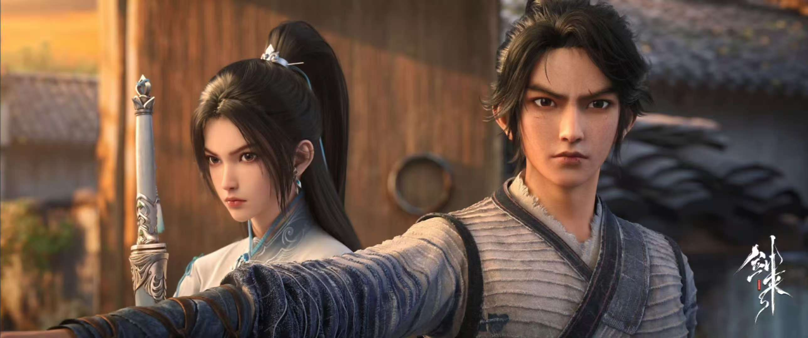

《剑来》的故事围绕小镇少年陈平安展开。陈平安生活在一个看似平凡却暗藏玄机的小镇，父母早亡的他受尽苦难。小镇被“大骊”王朝盯上，打破了原有的平静。随着各方势力的角逐，陈平安被迫离开小镇。
离开小镇后，陈平安踏上了修行之路。他一边在江湖中闯荡，结交了许多志同道合的朋友，如宁姚、左右、崔东山等。一边面对各种强大的敌人和复杂的势力。在剑气长城，他参与对抗妖族入侵的惨烈战争，守护人间。
在修行方面，陈平安资质平凡但毅力非凡。他师从文圣等多位先生，学习儒、释、道等百家学问，不断提升自己的境界。他有两把剑“笼中雀”和“井中月”，剑技也在实战和修炼中逐渐精湛。
小说的世界中有着三教百家的势力划分，各方势力为了大道、气运等利益相互竞争。同时，世界背后还有着天庭共主时代的旧秩序残留与新崛起势力的博弈。陈平安就在这样复杂的环境中，坚守自己的道理，寻找“一”，在广袤的天地间历经磨难而前行。
